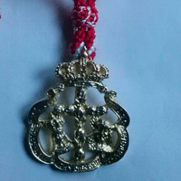

Cofradia Ntro. P. Jesus Nazareno y Ntra. Sra. de los Dolores
Inicio
Hermandad
Junta de Gobierno
Reglas de Hermandad
Leer Online
|
Descargar
Yo sigo a la cofradia de el nazareno y dolores coronada

Como Hacerse
Hermano